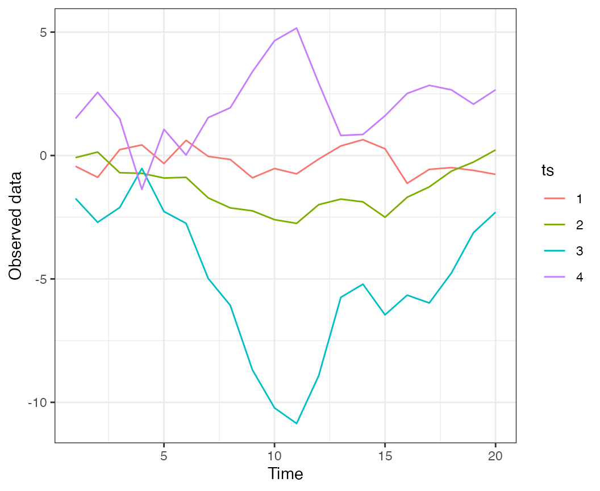
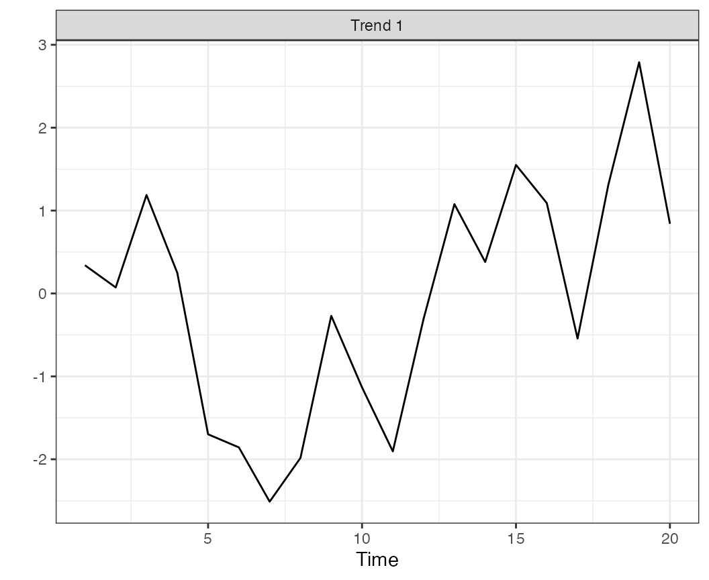
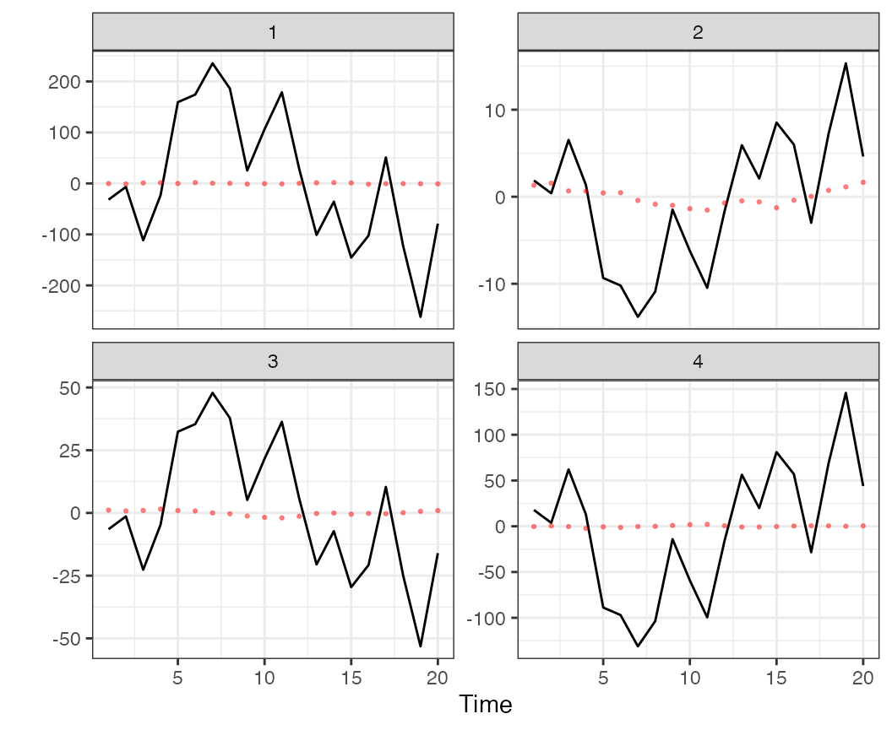
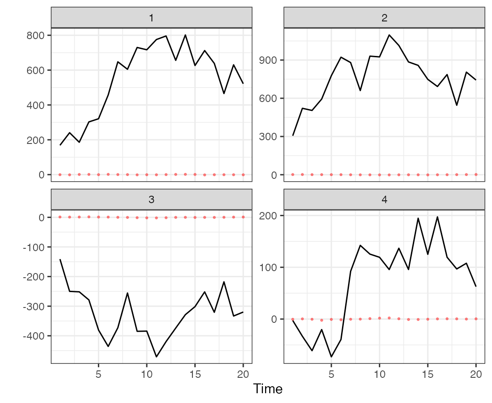
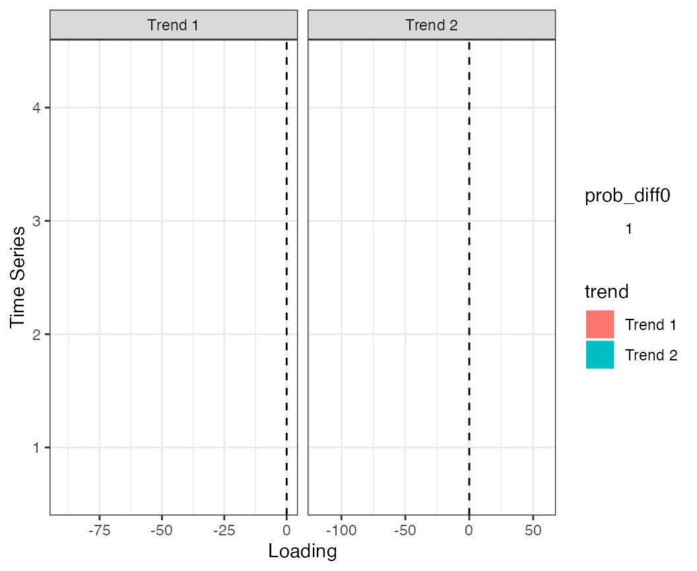
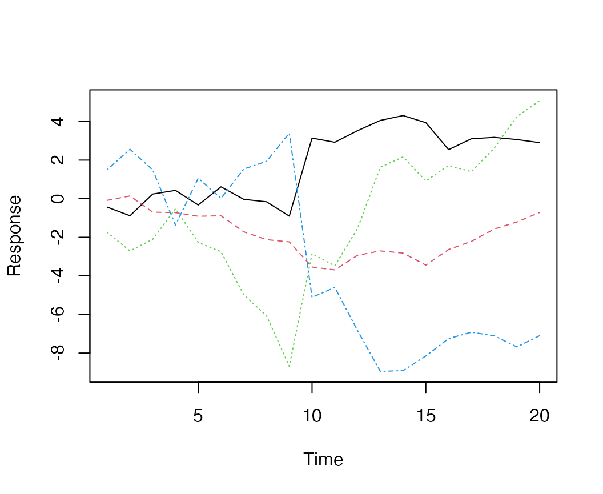
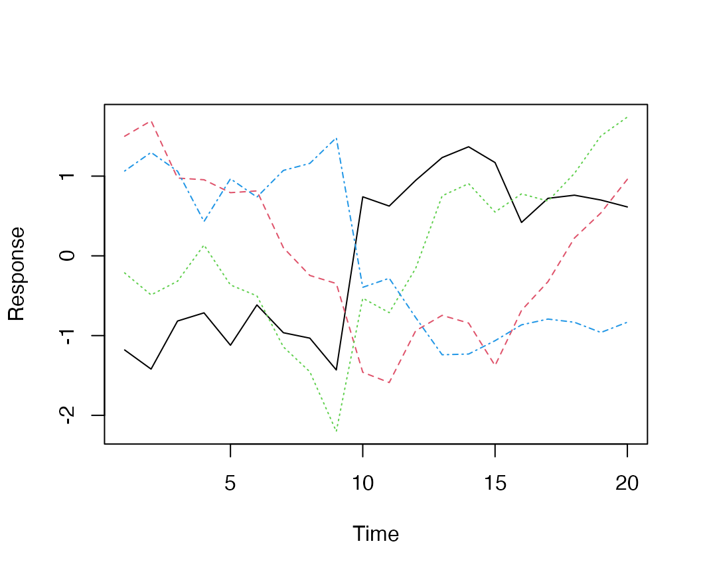
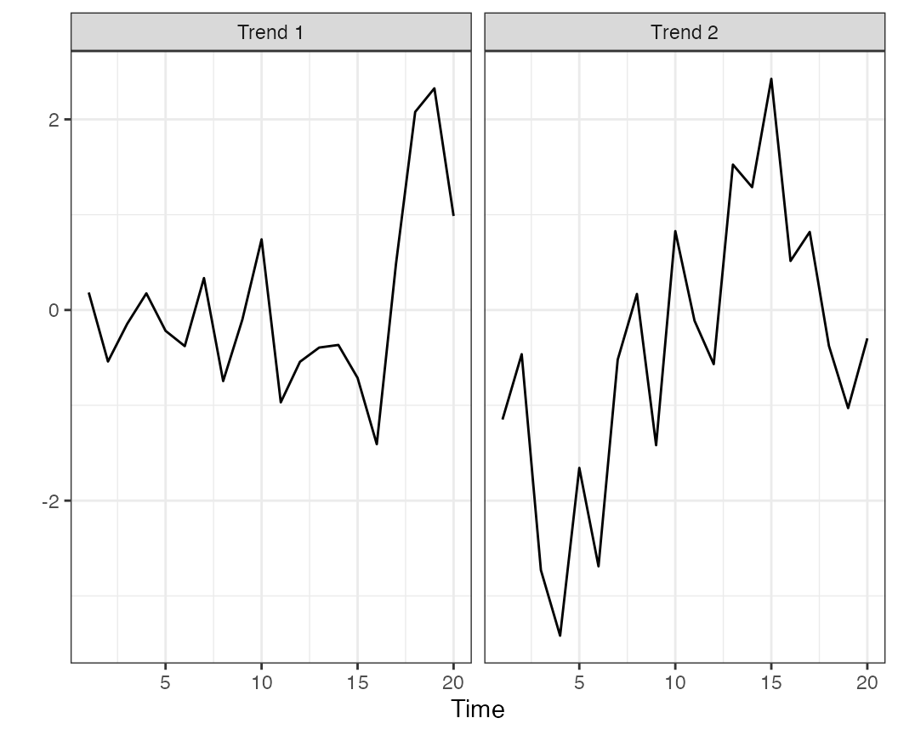
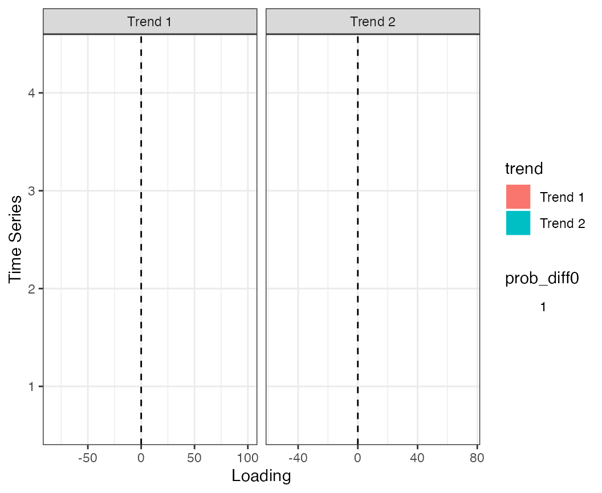

vignettes/a1_bayesdfa.Rmd
a1_bayesdfa.RmdHere we will use the bayesdfa package to fit dynamic factor analysis
(DFA) model to simulated time series data. In addition to working
through an example of DFA for multivariate time series, we’ll apply
bayesdfa routines for fitting hidden Markov models (HMMs) to the
estimated trends to identify latent regimes. Most of the core functions
of the package are included here, including fit_dfa() and
find_dfa_trends for fitting DFA models,
plot_trends(), plot_fitted() and
plot_loadings() for plotting estimates,
find_swans() for flagging extremes,
fit_regimes() and find_regimes() for fitting
HMM models, and plot_regimes() for plotting HMM output.
Let’s load the necessary packages:
We adopt the same notation used in the MARSS package for dynamic factor analysis models. The DFA model consists of two models, one describing the latent process or states, and an observation or data model linking the process model to observations. Slight variations on this model are described below, but the process model for the basic DFA model is written as a multivariate random walk,
where the matrix is dimensioned as the number of years by the number of latent trends . The process error is assumed to be multivariate normal, where is generally assumed to be a -by- identity matrix.
The observation or data model linking to observed data is
The matrix represents a matrix of estimated loadings, dimensioned as number of time series by number of latent trends . Optional covariates are included in the observation model with estimated coefficients . The residual errors are assumed to be normally distributed, e.g. . There are a number of choices for – these can be a diagonal matrix with equal or unequal elements, or an unconstrained covariance matrix.
First, let’s simulate some data. We will use the built-in function
sim_dfa(), but normally you would start with your own data.
We will simulate 20 data points from 4 time series, generated from 2
latent processes. For this first dataset, the data won’t include
extremes, and loadings will be randomly assigned (default).

Simulated data, from a model with 2 latent trends and no extremes.
Next, we’ll fit a 1-trend, 2-trend, and 3-trend DFA model to the
simulated time series using the fit_dfa() function.
Starting with the 1-trend model, we’ll estimate the posterior
distributions of the trends and loadings. Note that this example uses 1
MCMC chain and 50 iterations — for real examples, you’ll want to use
more (say 4 chains, 5000 iterations).
f1 <- fit_dfa(
y = sim_dat$y_sim, num_trends = 1, scale="zscore",
iter = iter, chains = chains, thin = 1
)Convergence of DFA models can be evaluated with our
is_converged() function. This function takes a fitted
object, and specified threshold argument representing the
maximum allowed Rhat value (default = 1.05). The convergence test isn’t
that useful for a model with such a short number of iterations, but is
called with
is_converged(f1, threshold = 1.05)## [1] TRUEThis function evaluates Rhat values for all parameters and log likelihood values - so be sure to check what’s not converging if the model is not passing this test.
Before we extract the trends from the model, we need to rotate the
loadings matrix and trends. By default we use the varimax rotation,
implemented in the rotate_trends() function. An optional
argument is the conf_level argument, which calculates the
specified confidence (credible) interval of the estimates (by default,
this is set to 0.95).
r <- rotate_trends(f1)The rotated object has several quantities of interest, including the mean values of the trends “trends_mean” and loadings “Z_rot_mean”,
names(r)## [1] "Z_rot" "trends" "Z_rot_mean" "Z_rot_median"
## [5] "trends_mean" "trends_median" "trends_lower" "trends_upper"We can then plot the trends and intervals, with
plot_trends(r) + theme_bw()## Warning: `aes_string()` was deprecated in ggplot2 3.0.0.
## ℹ Please use tidy evaluation idioms with `aes()`.
## ℹ See also `vignette("ggplot2-in-packages")` for more information.
## ℹ The deprecated feature was likely used in the bayesdfa package.
## Please report the issue at <https://github.com/fate-ewi/bayesdfa/issues>.
## This warning is displayed once per session.
## Call `lifecycle::last_lifecycle_warnings()` to see where this warning was
## generated.
Estimated trend and 95% CI for a 1-trend DFA model applied to simulated data.
We can also plot the estimated loadings (we’ll show that plot for the
more complicated 2-trend model below because it’s not as interesting for
the 1-trend model) and the fitted values. To plot the fitted values from
the 1-trend model, we’ll use the plot_fitted() function
(predicted values can also be returned without a plot, with the
predicted()) function.
The trends and intervals are plotted, faceting by time series, with
plot_fitted(f1) + theme_bw()
Model predicted values from the 1-trend DFA model applied to simulated data.
Moving to a more complex model, we’ll fit the 2-trend and 3-trend models. All other arguments stay the same as before,
f2 <- fit_dfa(
y = sim_dat$y_sim, num_trends = 2, scale="zscore",
iter = iter, chains = chains, thin = 1
)
r2 <- rotate_trends(f2)
f3 <- fit_dfa(
y = sim_dat$y_sim, num_trends = 3, scale="zscore",
iter = chains, chains = chains, thin = 1
)
r3 <- rotate_trends(f3)The fits from the 2-trend model look considerably better than that from the 1-trend model,
plot_fitted(f2) + theme_bw()
Model predicted values from the 2-trend DFA model applied to simulated data.
The loadings from the 1-trend model aren’t as interesting because for a 1-trend model the loadings are a 1-dimensional vector. For the 2 trend model, there’s a separate loading of each time series on each trend,
round(r2$Z_rot_mean, 2)## [,1] [,2]
## [1,] -90.54 -41.89
## [2,] -19.10 -117.64
## [3,] -7.55 58.95
## [4,] -49.06 15.14These loadings can also be plotted with the
plot_loadings() function. This shows the distribution of
the densities as violin plots, with color proportional to being
different from 0.
plot_loadings(r2) + theme_bw()
Estimated loadings from the 2-trend DFA model.
Finally, we might be interested in comparing some measure of model
selection across these models to identify whether the data support the
1-trend, 2-trend, or 3-trend models. The Leave One Out Information
Criterion can be calculated with the loo() function, for
example the LOOIC for the 1-trend model can be accessed with
loo1 <- loo(f1)
loo1$estimates## Estimate SE
## elpd_loo -2.973137e+04 6.859515e+03
## p_loo -1.332268e-15 1.037278e-15
## looic 5.946275e+04 1.371903e+04where 5.9462745^{4} is the estimate and 1.371903^{4} is the standard error.
As an alternative to fitting each model individually as we did above,
we also developed the find_dfa_trends() to automate fitting
a larger number of models. In addition to evaluating different trends,
this function allows the user to optionally evaluate models with normal
and Student-t process errors, and alternative variance structures
(observation variance of time series being equal, or not). For example,
to fit models with 1:5 trends, both Student-t and normal errors, and
equal and unequal variances, the call would be
m <- find_dfa_trends(
y = s$y_sim, iter = iter,
kmin = 1, kmax = 5, chains = chains, compare_normal = TRUE,
variance = c("equal", "unequal")
)In this example, we’ll simulate data with an extreme anomaly. The biggest difference between this model and the conventional model is that in the DFA process model,
instead of being normally distributed, we assume is Student-t distributed. With multiple trends, this becomes a multivariate Student-t,
The parameter controls how much the tails of this distribution deviate from the normal, with smaller values ( closer to 2) resulting in more extreme anomalies, and large values ( closer to 30) resulting in behavior similar to a normal distribution.
As before, this will be 20 data points from 4 time series, generated
from 2 latent processes. The sim_dfa() function’s arguments
extreme_value and extreme_loc allow the user
to specify the magnitude of the extreme (as an additive term in the
random walk), and the location of the extreme (defaults to the midpoint
of the time series). Here we’ll include an extreme value of 6,
Plotting the data shows the anomaly occurring between time step 9 and 10,

Simulated data, from a model with 2 latent trends and an extreme in the midpoint of the time series.
Though the plot is a little more clear if we standardize the time series first,

Simulated data (z-scored), from a model with 2 latent trends and an extreme in the midpoint of the time series.
Instead of fitting a model with normal process deviations, we may be
interested in fitting the model with Student-t deviations. We can turn
on the estimation of nu with the estimate_nu
argument. [Alternatively, nu can also be fixed a priori by setting the
argument nu_fixed]. Here’s the code for a 2-trend model
with Student-t deviations,
t2 <- fit_dfa(
y = sim_dat$y_sim, num_trends = 2, scale="zscore",
iter = iter, chains = chains, thin = 1, estimate_nu = TRUE
)Again we have to rotate the trends before plotting,
r <- rotate_trends(t2)
plot_trends(r) + theme_bw()
Estimated trends, from a model with 2 latent trends Student-t deviations.
And the loadings,
plot_loadings(r) + theme_bw()
Estimated loadings, from a model with 2 latent trends Student-t deviations.
One way to look for extremes is using the find_swans()
function, which evaluates the probability of observing a deviation in
the estimated trend (or data) greater than what is expected from a
normal distribution. This function takes a threshold
argument, which specifies the cutoff. For example, to find extremes
greater than 1 in 1000 under a normal distribution, the function call
is
find_swans(r, plot = FALSE, threshold = 1 / 1000)Setting plot to TRUE also creates a time series plot that flags these values.
We can also look at the estimated nu parameter, which
shows some support for using the Student-t distribution (values greater
than ~ 30 lead to similar behavior as a normal distribution),
## V1
## Min. :2.82
## 1st Qu.:2.82
## Median :2.82
## Mean :2.82
## 3rd Qu.:2.82
## Max. :2.82We’ve implemented a number of alternative families for cases when the
response variable might be non-normally distributed. These alternative
families may be specified with the family argument as a text string in
the fit_dfa function, e.g.
f <- fit_dfa(..., family = "poisson")The currently supported families can be specified as any of the following – the link functions are currently hard-coded, and included in the table below.
| Family | link |
|---|---|
| gaussian | identity |
| lognormal | log |
| gamma | log |
| binomial | logit |
| poisson | log |
| nbinom2 | log |
By default, the loadings matrix in a DFA is constrained by zeros. For example, a 3-trend model applied to 5 time series would have a loadings matrix that was constrained as
| Trend 1 | Trend 2 | Trend 3 |
|---|---|---|
| z[1,1] | 0 | 0 |
| z[2,1] | z[2,2] | 0 |
| z[3,1] | z[3,2] | z[3,3] |
| z[4,1] | z[4,2] | z[4,3] |
| z[5,1] | z[5,2] | z[5,3] |
As an alternative, we may wish to fit a model where each time series arises as a mixture of the trends. In this case, the loadings matrix would be
| Trend 1 | Trend 2 | Trend 3 |
|---|---|---|
| z[1,1] | z[1,2] | z[1,3] |
| z[2,1] | z[2,2] | z[2,3] |
| z[3,1] | z[3,2] | z[3,3] |
| z[4,1] | z[4,2] | z[4,3] |
| z[5,1] | z[5,2] | z[5,3] |
And the added constraint is that each row sums to 1, e.g.
## Including autoregressive (AR) or moving-average (MA) components on trends
For some models, it may be appropriate to include autoregressive or moving average components to model the latent trends. We’ve implemented 1st - order components on each, though by default these are not included.
To include the AR(1) component on the trend, you can specify
fit <- fit_dfa(..., estimate_trend_ar = TRUE)This results in a model where trend is modeled as
Each trend is allowed to have a unique AR(1) parameter, .
In conventional DFA models, the process deviations are assumed to be independent, e.g. . By including a MA(1) component on the trends, these terms may be modeled as
where is the trend-specific MA parameter, is the process variance, and usually constrained to be not estimated and fixed at 1.
Finally, we might be interested in evaluating evidence for the
estimated trends changing between multiple regimes. We’ve implemented
HMMs in the functions fit_regimes() and
find_regimes(). fit_regimes fits a HMM with a
pre-specified number of latent states, while find_regimes()
loops over a range of models so that support can be evaluated with
LOOIC.
We’ll illustrate an example of the fit_regimes()
function. Note that in the current version of the package, this has to
be applied to each trend separately. Also, uncertainty estimates from
the DFA trends may also be included as data (instead of estimated) –
this may be particularly useful for datasets with lots of missing values
in portions of the time series (where the uncertainty balloons up).
Applying the 2-regime model to the first trend,
reg_mod <- fit_regimes(
y = r$trends_mean[1, ],
sds = (r$trends_upper - r$trends_mean)[1, ] / 1.96,
n_regimes = 2,
iter = 50, chains = 1
)In addition to getting diagnostics and quantities like LOOIC out of
the reg_mod object, we can plot the estimated states.
plot_regime_model(reg_mod)In this case, there might be some support for the 2-regime model.
Sometimes (but not in this example) label switching makes the plots a
little challenging to interpret, and the labels need to be reversed.
We’ve included the argument flip_regimes to help with
this,
plot_regime_model(reg_mod, flip_regimes = TRUE)We allow weights to be used in DFA models in two ways. In the first form, inverse variance weighting is used to adjust observations based on some standard error associated with each observation. Specifically, the weights are included by modifying each variance to be . As a concrete example, we’ll simulate a dataset, add some examples of standard errors on the survey indices, and then perform the DFA.
Our simulated standard errors are the same for all surveys – except time series 2, which is much more precise.
set.seed(1)
sim_dat <- sim_dfa(
num_trends = 2,
num_years = 20,
num_ts = 4
)
df <- data.frame(obs = c(sim_dat$y_sim), time = sort(rep(1:20,4)),
ts = rep(1:4,20))
df$se <- runif(nrow(df), 0.6, 0.8)
df$se[which(df$ts == 2)] = 0.2Next we can generate the weights (this is redundant, and “se” could be used instead in the function call below). Because the weights are used as an offset, , we don’t want to use the SE alone as a weight but make them inversely related to the SE. As a quick note, the scale of these may affect estimation and some additional normalization may be needed (rather than standard errors, it may be more helpful to think about the sample size each data point represents).
df$weights <- (1 / df$se)^2And fit the model with the weights argument
f2 <- fit_dfa(
y = df, num_trends = 2, scale="zscore",
iter = 500, chains = 1, thin = 1,
inv_var_weights = "weights", data_shape = "long"
)##
## SAMPLING FOR MODEL 'dfa' NOW (CHAIN 1).
## Chain 1:
## Chain 1: Gradient evaluation took 1.8e-05 seconds
## Chain 1: 1000 transitions using 10 leapfrog steps per transition would take 0.18 seconds.
## Chain 1: Adjust your expectations accordingly!
## Chain 1:
## Chain 1:
## Chain 1: Iteration: 1 / 500 [ 0%] (Warmup)
## Chain 1: Iteration: 50 / 500 [ 10%] (Warmup)
## Chain 1: Iteration: 100 / 500 [ 20%] (Warmup)
## Chain 1: Iteration: 150 / 500 [ 30%] (Warmup)
## Chain 1: Iteration: 200 / 500 [ 40%] (Warmup)
## Chain 1: Iteration: 250 / 500 [ 50%] (Warmup)
## Chain 1: Iteration: 251 / 500 [ 50%] (Sampling)
## Chain 1: Iteration: 300 / 500 [ 60%] (Sampling)
## Chain 1: Iteration: 350 / 500 [ 70%] (Sampling)
## Chain 1: Iteration: 400 / 500 [ 80%] (Sampling)
## Chain 1: Iteration: 450 / 500 [ 90%] (Sampling)
## Chain 1: Iteration: 500 / 500 [100%] (Sampling)
## Chain 1:
## Chain 1: Elapsed Time: 6.243 seconds (Warm-up)
## Chain 1: 0.937 seconds (Sampling)
## Chain 1: 7.18 seconds (Total)
## Chain 1:## Warning: Bulk Effective Samples Size (ESS) is too low, indicating posterior means and medians may be unreliable.
## Running the chains for more iterations may help. See
## https://mc-stan.org/misc/warnings.html#bulk-ess## Warning: Tail Effective Samples Size (ESS) is too low, indicating posterior variances and tail quantiles may be unreliable.
## Running the chains for more iterations may help. See
## https://mc-stan.org/misc/warnings.html#tail-ess## Inference for the input samples (1 chains: each with iter = 250; warmup = 125):
##
## Q5 Q50 Q95 Mean SD Rhat Bulk_ESS Tail_ESS
## x[1,1] -0.8 -0.4 0.0 -0.4 0.3 1.01 120 54
## x[2,1] 1.3 2.0 2.7 2.0 0.4 1.08 12 85
## x[1,2] -1.7 -1.1 -0.7 -1.2 0.3 1.01 104 43
## x[2,2] 1.4 2.2 3.2 2.3 0.5 1.07 32 50
## x[1,3] 0.2 0.5 1.0 0.6 0.2 1.01 119 119
## x[2,3] 0.8 1.2 1.7 1.2 0.3 1.00 58 47
## x[1,4] 1.1 1.6 2.3 1.6 0.4 1.01 115 102
## x[2,4] 0.7 1.3 2.2 1.4 0.5 1.00 39 48
## x[1,5] 0.0 0.3 0.8 0.4 0.3 0.99 113 106
## x[2,5] 0.5 0.8 1.3 0.9 0.3 1.00 88 107
## x[1,6] 0.8 1.3 2.0 1.4 0.4 1.00 124 101
## x[2,6] 0.4 0.9 1.5 0.9 0.3 1.01 32 32
## x[1,7] 0.1 0.5 1.1 0.6 0.3 0.99 133 108
## x[2,7] -1.0 -0.6 -0.2 -0.6 0.2 1.03 51 76
## x[1,8] -0.1 0.4 0.8 0.4 0.3 1.04 168 104
## x[2,8] -1.8 -1.3 -0.8 -1.3 0.3 1.09 17 91
## x[1,9] -1.3 -0.7 -0.3 -0.7 0.3 1.00 94 70
## x[2,9] -2.3 -1.7 -1.2 -1.7 0.4 1.01 51 81
## x[1,10] -1.4 -0.9 -0.5 -0.9 0.3 1.01 145 137
## x[2,10] -3.3 -2.4 -1.7 -2.4 0.5 1.00 47 47
## x[1,11] -1.8 -1.2 -0.6 -1.2 0.4 1.01 106 85
## x[2,11] -3.5 -2.7 -1.9 -2.7 0.5 1.00 42 67
## x[1,12] -0.5 -0.1 0.2 -0.1 0.2 0.99 213 138
## x[2,12] -1.8 -1.3 -0.9 -1.3 0.3 1.00 79 70
## x[1,13] 0.6 1.1 1.7 1.1 0.3 0.99 105 81
## x[2,13] -1.2 -0.6 -0.1 -0.6 0.3 1.08 20 47
## x[1,14] 0.8 1.4 2.1 1.4 0.4 1.02 119 104
## x[2,14] -1.4 -0.8 -0.2 -0.8 0.4 1.06 30 14
## x[1,15] 0.6 1.0 1.6 1.0 0.3 1.01 124 108
## x[2,15] -2.5 -1.8 -1.1 -1.8 0.4 1.06 32 33
## x[1,16] -1.2 -0.7 -0.4 -0.7 0.3 1.00 82 59
## x[2,16] -1.1 -0.7 -0.3 -0.7 0.2 1.00 58 128
## x[1,17] -1.3 -0.7 -0.2 -0.7 0.3 1.03 203 125
## x[2,17] -0.4 0.0 0.3 0.0 0.3 1.01 49 33
## x[1,18] -1.4 -0.7 -0.4 -0.8 0.3 1.00 260 134
## x[2,18] 0.4 1.0 1.6 1.0 0.3 1.07 22 40
## x[1,19] -1.4 -0.7 -0.3 -0.8 0.3 1.00 128 100
## x[2,19] 1.0 1.7 2.4 1.7 0.4 1.04 41 48
## x[1,20] -1.8 -1.3 -0.8 -1.2 0.3 1.01 101 65
## x[2,20] 1.5 2.4 3.3 2.4 0.6 1.06 34 31
## Z[1,1] 0.7 0.9 1.3 0.9 0.2 1.02 90 84
## Z[2,1] -0.4 -0.1 0.1 -0.1 0.2 1.05 27 14
## Z[3,1] 0.1 0.4 0.7 0.3 0.2 1.05 26 21
## Z[4,1] -1.2 -0.8 -0.5 -0.8 0.2 1.06 45 108
## Z[1,2] 0.0 0.0 0.0 0.0 0.0 1.00 125 125
## Z[2,2] 0.5 0.6 0.9 0.6 0.1 1.04 45 77
## Z[3,2] 0.4 0.6 0.8 0.6 0.1 1.00 55 81
## Z[4,2] -0.5 -0.3 -0.2 -0.3 0.1 1.00 94 82
## log_lik[1] -0.8 -0.1 0.1 -0.2 0.3 1.01 42 85
## log_lik[2] -0.2 1.1 1.5 0.9 0.7 1.00 113 106
## log_lik[3] -0.5 -0.1 0.1 -0.1 0.2 1.03 50 146
## log_lik[4] -1.1 -0.1 0.2 -0.2 0.5 1.00 55 52
## log_lik[5] -1.1 0.0 0.3 -0.1 0.4 1.00 103 101
## log_lik[6] -0.9 1.0 1.4 0.8 0.8 1.00 98 83
## log_lik[7] -0.5 0.1 0.3 0.0 0.2 1.02 87 107
## log_lik[8] -1.1 0.1 0.3 -0.1 0.4 1.02 81 47
## log_lik[9] -2.6 -0.7 0.2 -1.0 1.0 1.00 131 101
## log_lik[10] -0.4 1.2 1.5 0.9 0.7 0.99 127 104
## log_lik[11] -0.4 0.0 0.3 0.0 0.2 1.01 57 71
## log_lik[12] -2.8 -0.7 0.1 -0.9 1.0 1.00 183 105
## log_lik[13] -1.4 -0.1 0.2 -0.3 0.5 1.06 102 108
## log_lik[14] -0.5 1.2 1.4 0.9 0.7 0.99 99 86
## log_lik[15] -1.0 -0.2 0.1 -0.3 0.3 1.01 121 143
## log_lik[16] -3.7 -1.0 0.0 -1.3 1.2 1.01 208 117
## log_lik[17] -2.4 -0.7 0.1 -0.9 0.8 0.99 133 108
## log_lik[18] -1.9 1.0 1.4 0.6 1.0 0.99 103 84
## log_lik[19] -1.5 -0.3 0.2 -0.5 0.5 1.00 169 86
## log_lik[20] -0.7 -0.1 0.1 -0.2 0.3 1.00 105 85
## log_lik[21] -2.6 -0.6 0.1 -0.9 1.0 1.00 182 108
## log_lik[22] -0.4 1.2 1.5 0.9 0.7 1.00 116 108
## log_lik[23] -1.0 -0.1 0.1 -0.2 0.4 1.00 134 107
## log_lik[24] -0.7 -0.1 0.1 -0.2 0.3 1.00 70 46
## log_lik[25] -0.8 -0.1 0.2 -0.2 0.4 1.00 88 85
## log_lik[26] -0.5 1.2 1.4 0.9 0.7 0.99 70 101
## log_lik[27] -0.4 -0.1 0.1 -0.1 0.2 0.99 109 84
## log_lik[28] -0.6 -0.1 0.2 -0.1 0.3 1.00 61 52
## log_lik[29] -1.6 0.0 0.2 -0.2 0.5 1.01 59 95
## log_lik[30] -0.6 1.1 1.4 0.9 0.8 0.99 111 108
## log_lik[31] -0.9 -0.1 0.3 -0.2 0.4 1.01 110 105
## log_lik[32] -0.9 -0.1 0.1 -0.2 0.3 1.04 72 72
## log_lik[33] -3.4 -1.0 0.0 -1.2 1.0 0.99 132 83
## log_lik[34] -0.2 1.2 1.4 1.0 0.6 0.99 138 146
## log_lik[35] -0.3 0.1 0.4 0.1 0.2 1.00 52 86
## log_lik[36] -1.6 -0.1 0.2 -0.3 0.6 0.99 82 64
## log_lik[37] -1.8 -0.3 0.0 -0.5 0.6 1.00 143 106
## log_lik[38] -0.7 1.2 1.5 0.9 0.7 1.01 66 58
## log_lik[39] -0.5 0.0 0.2 -0.1 0.2 1.00 64 101
## log_lik[40] -1.6 -0.1 0.2 -0.3 0.6 1.01 128 86
## log_lik[41] -0.9 -0.1 0.1 -0.2 0.4 1.00 116 104
## log_lik[42] -0.2 1.2 1.4 0.9 0.6 0.99 123 103
## log_lik[43] -0.6 -0.1 0.1 -0.1 0.2 0.99 84 104
## log_lik[44] -2.2 -0.2 0.2 -0.5 1.0 1.02 106 106
## log_lik[45] -1.8 -0.4 0.2 -0.5 0.7 1.01 212 143
## log_lik[46] -0.6 1.0 1.4 0.8 0.7 0.99 140 108
## log_lik[47] -2.4 -1.1 -0.3 -1.2 0.7 1.00 130 136
## log_lik[48] -0.5 -0.1 0.1 -0.1 0.2 1.00 92 79
## log_lik[49] -1.3 -0.2 0.2 -0.3 0.5 0.99 164 106
## log_lik[50] -0.2 1.1 1.4 0.9 0.6 1.01 140 85
## log_lik[51] -1.2 -0.1 0.2 -0.3 0.5 0.99 116 101
## log_lik[52] -0.9 -0.2 0.1 -0.2 0.4 0.99 105 134
## log_lik[53] -2.7 -0.5 0.1 -0.7 0.8 1.00 130 78
## log_lik[54] -0.5 1.1 1.4 0.9 0.7 1.01 113 108
## log_lik[55] -0.6 -0.1 0.1 -0.2 0.2 0.99 70 61
## log_lik[56] -1.0 -0.1 0.2 -0.2 0.4 1.00 86 81
## log_lik[57] -0.6 0.1 0.4 0.0 0.4 1.00 112 83
## log_lik[58] -0.5 1.1 1.5 0.8 0.7 1.01 138 78
## log_lik[59] -0.9 0.0 0.2 -0.1 0.3 0.99 96 82
## log_lik[60] -0.8 0.1 0.4 0.0 0.4 1.01 87 82
## log_lik[61] -6.8 -3.6 -1.0 -3.7 1.7 1.00 84 68
## log_lik[62] -1.0 1.2 1.5 0.8 0.9 1.00 74 53
## log_lik[63] -1.8 -0.6 -0.1 -0.7 0.5 0.99 125 142
## log_lik[64] -2.9 -0.9 -0.1 -1.1 0.9 1.00 69 101
## log_lik[65] -0.6 0.0 0.3 -0.1 0.4 1.04 26 73
## log_lik[66] -0.5 1.0 1.5 0.8 0.6 1.01 65 108
## log_lik[67] -0.3 0.0 0.2 0.0 0.2 1.03 47 53
## log_lik[68] -0.5 -0.1 0.2 -0.1 0.2 1.02 51 63
## log_lik[69] -1.4 -0.2 0.1 -0.3 0.5 0.99 116 86
## log_lik[70] -1.1 1.1 1.4 0.8 0.7 0.99 101 85
## log_lik[71] -0.8 -0.1 0.2 -0.2 0.3 1.00 177 107
## log_lik[72] -0.8 0.0 0.2 -0.1 0.4 1.00 95 85
## log_lik[73] -0.6 0.0 0.2 -0.1 0.3 0.99 130 108
## log_lik[74] -0.8 1.2 1.4 0.9 0.8 1.01 48 108
## log_lik[75] -0.4 -0.1 0.1 -0.1 0.2 0.99 53 81
## log_lik[76] -0.8 0.1 0.3 0.0 0.4 1.03 94 91
## log_lik[77] -1.2 -0.1 0.2 -0.3 0.5 1.00 50 71
## log_lik[78] -0.2 1.1 1.5 0.9 0.6 1.00 77 82
## log_lik[79] -0.5 -0.1 0.1 -0.1 0.2 1.02 93 143
## log_lik[80] -1.4 -0.1 0.3 -0.2 0.5 1.01 118 81
## xstar[1,1] -2.7 -1.1 0.5 -1.2 1.1 1.02 55 106
## xstar[2,1] 0.6 2.3 4.6 2.4 1.2 1.00 99 96
## sigma[1] 0.4 0.5 0.6 0.5 0.1 1.00 39 71
## lp__ -9.9 1.7 11.3 1.4 6.9 1.02 33 69
##
## For each parameter, Bulk_ESS and Tail_ESS are crude measures of
## effective sample size for bulk and tail quantities respectively (an ESS > 100
## per chain is considered good), and Rhat is the potential scale reduction
## factor on rank normalized split chains (at convergence, Rhat <= 1.05).As a second type of weighting, we also have implemented weights in
the same form used in other widely used packages (glmmTMB, sdmTMB, brms,
etc). In this case, weights are used as multipliers on the
log-likelihood of each observation. To specify these kinds of weights,
we use the likelihood_weights argument instead, where
observations with higher weights contribute more to the total log
likelihood.
f2 <- fit_dfa(
y = df, num_trends = 2, scale="zscore",
iter = 500, chains = 1, thin = 1,
likelihood_weights = "weights", data_shape = "long"
)